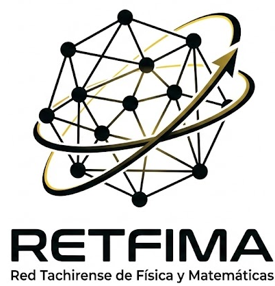

Centenario de la mecánica cuántica
Una experiencia que transforma la forma de ver el universo
Organizado por el CEDIC en colaboración con los departamentos de Matemática, Física y Química, con la finalidad de generar experiencias memorables que fomenten la curiosidad y la experimentación.
Te invitamos a ser parte de esta gran celebración donde la innovación, el conocimiento y la pasión científica se unen en un espacio único.
El Departamento publicará una edición especial de divulgación científica para los trabajos que cumplan con los requisitos de evaluación y arbitraje.
Amplia gama de proyectos innovadores desarrollados por estudiantes en el Hall de la Biblioteca UNET.
Ponencias sobre los últimos avances científicos a cargo de expertos en robótica, realidad aumentada y más.
Comparte en familia y amigos un espacio de aprendizaje, entretenimiento y comunidad científica.
Matemática, Física, Química y Biología — la base de todo conocimiento científico.
Matemáticas Aplicadas y Estadística orientadas a soluciones del mundo real.
Algoritmos, análisis de datos y ciencias de la computación aplicadas.
Sistemas autónomos, electrónica e innovación tecnológica interdisciplinaria.
Biólogo y Doctora en Ecología Tropical con Maestría en Agronomía (Mención Producción Vegetal). Galardonada con el Premio Nacional de Ciencia y Tecnología (Mención Investigador Novel, 2018). La Dra. Blanco se especializa en biotecnología agrícola orientada a la seguridad y soberanía alimentaria sostenible. Su labor investigativa destaca por la aplicación estratégica de bioinoculantes, específicamente Rizobacterias Promotoras del Crecimiento Vegetal (PGPR) nativas de la región andina venezolana. Con un enfoque integral agroecosistémico, ha demostrado que la inoculación microbiana no solo optimiza el rendimiento, sino que mejora significativamente las propiedades microbiológicas y enzimáticas del suelo, incluso en condiciones críticas de déficit hídrico. Sus contribuciones ofrecen soluciones escalables para la restauración de suelos y la resiliencia ambiental en el marco de una agricultura sustentable.

RETFIMAT nace como una plataforma de vanguardia diseñada para interconectar a docentes, investigadores y estudiantes apasionados por las ciencias. Su propósito fundamental es elevar el estándar de la enseñanza de la física y la matemática en el estado Táchira. En este sentido, el Centro de Enseñanza y Divulgación de las Ciencias (CEDIC) asume la dirección estratégica de esta integración, funcionando como el nodo central que proporciona recursos pedagógicos, formación continua y apoyo para que los Centros de Ciencias de las instituciones educativas desarrollen sus actividades científicas de forma estructurada.
Es Ingeniero Mecánico con una Maestría en Ingeniería Electrónica por la UNET y un Doctorado en Ingeniería Mecatrónica por la Universidad de Málaga, España. Adscrito al Núcleo de Diseño Mecánico del Departamento de Ingeniería Mecánica, actualmente ejerce como profesor en las áreas de Diseño Mecánico, Dibujo de Elementos de Máquinas y Robótica. También trabaja como profesor asesor y evaluador en el máster de Inteligencia Artificial, por la Universidad Internacional de Valencia (España). Fue el organizador principal de dos (02) competencias tachirenses de robótica (TachiBots) desarrolladas en los años 2024 y 2025. Es también el responsable del Laboratorio de Prototipos de la UNET, donde ha dirigido numerosos proyectos de investigación y trabajos de grado, entre los que destaca el desarrollo del robot Lázaro. Su trayectoria incluye 48 publicaciones en revistas y congresos, con 12 artículos indexados en el JCR. Sus principales líneas de investigación abarcan la robótica móvil, la navegabilidad, las aplicaciones de inteligencia artificial en robótica y el diseño mecánico, con un enfoque particular en el desarrollo de estructuras para robots.

Percepciones estudiantiles en el aprendizaje científico.
Jueves y Viernes · 9:00 am a 12:00 m
Hall de la Biblioteca UNET
Ambos días del evento
CEDIC, Departamento de Matemática y Física — Universidad Nacional Experimental del Táchira (UNET).
U.E. Colegio Divina Misericordia, U.E. Colegio Domingo Savio, Liceo Nacional Vicente Dávila.
Inscripciones habilitadas para la edición 2026. Los certificados estarán disponibles al culminar el evento.

{kind=link}